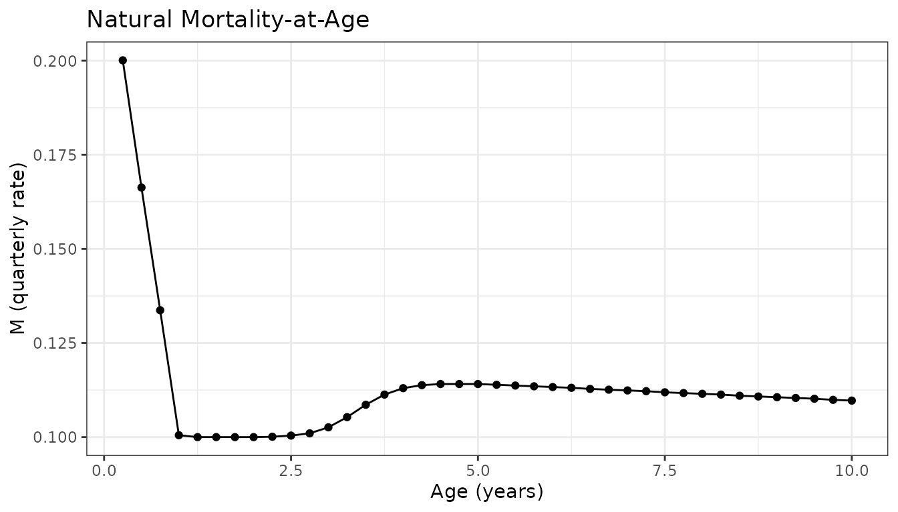
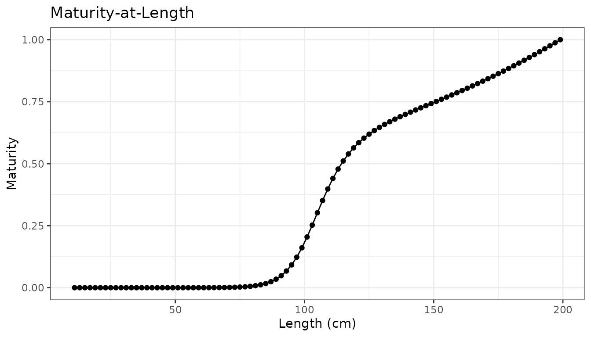
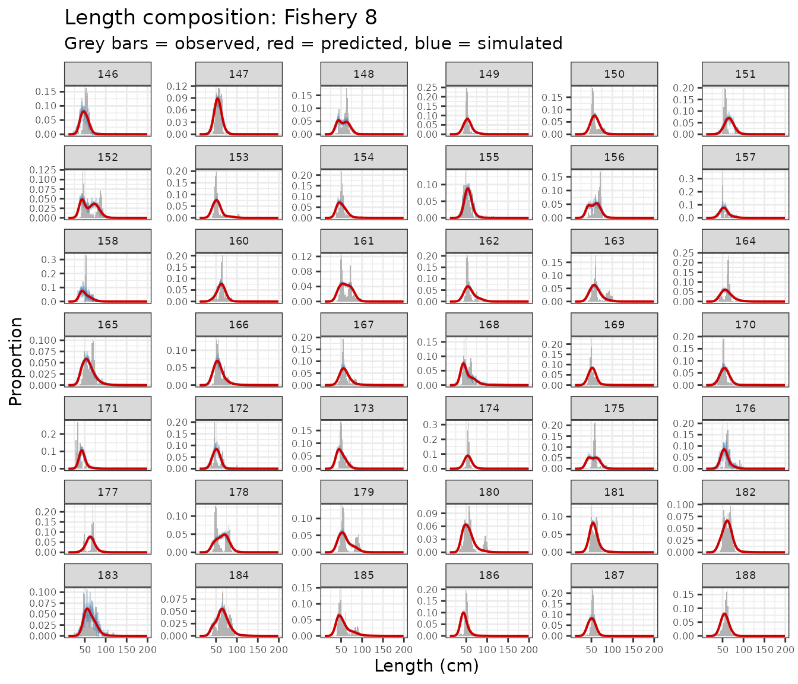
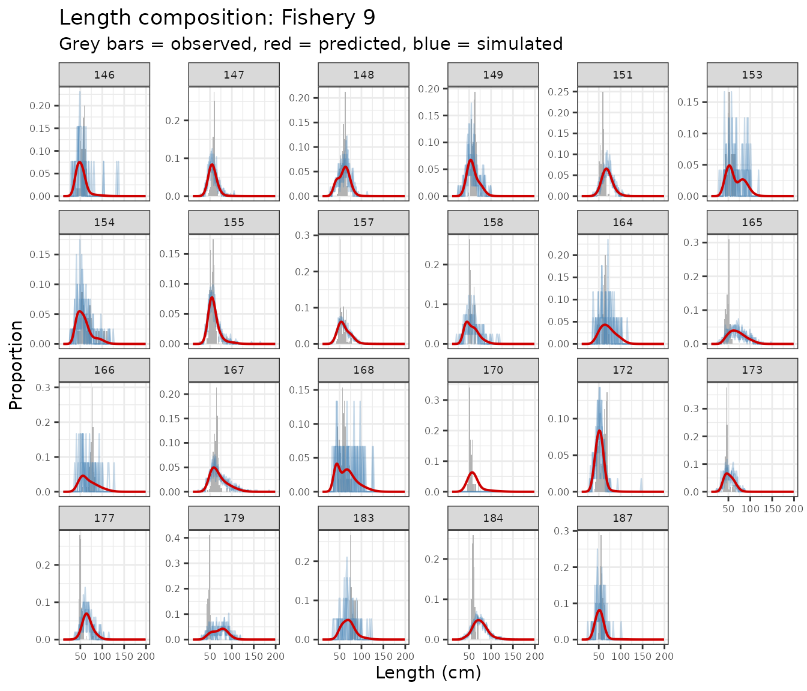
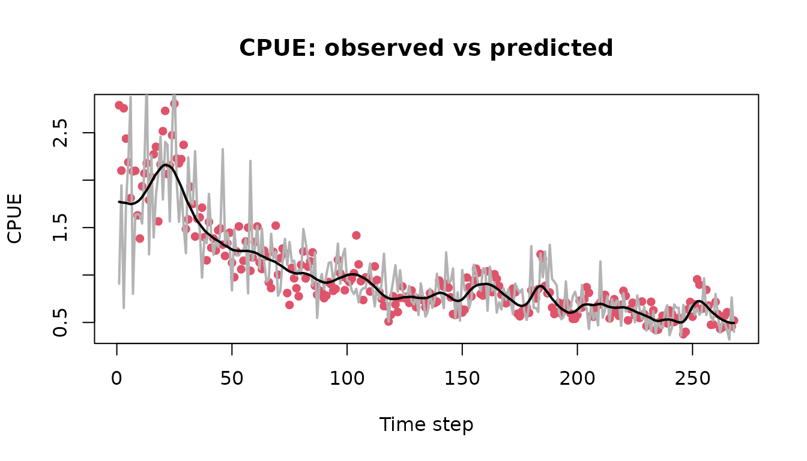
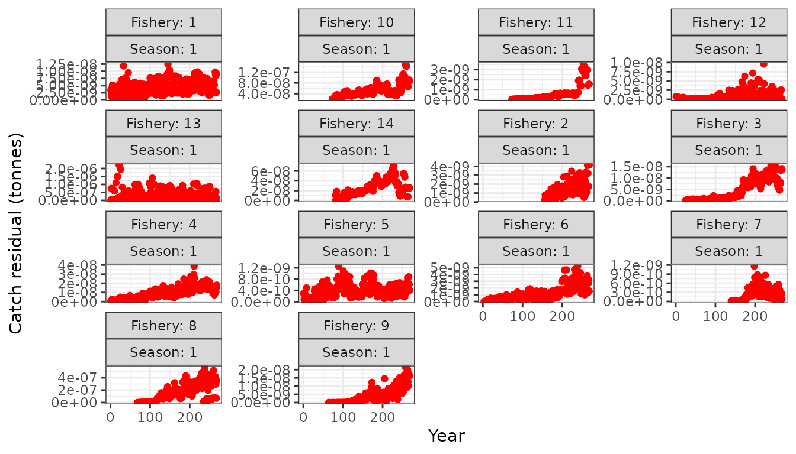
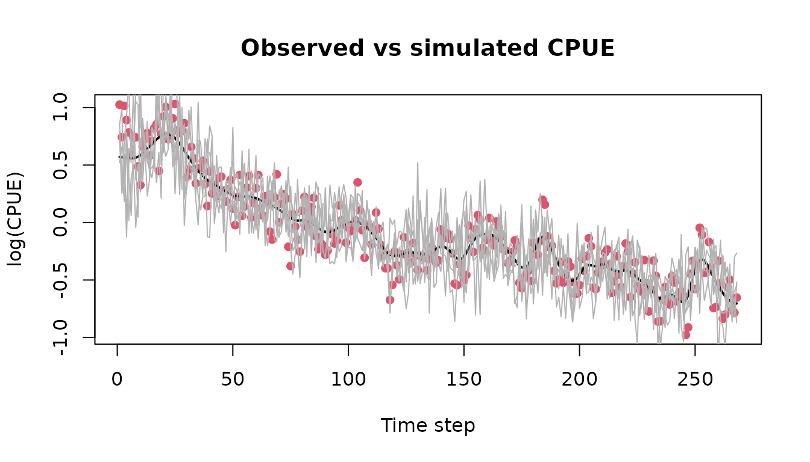

The BET model
bet.RmdIntroduction
The opal package is an R package that contains example
fisheries data from western and central pacific bigeye tuna (BET). This
page provides examples using the opal BET model.
Load inputs
Load the opal package and the RTMB
dependency. The ggplot2 package is used for plotting.
# library(ggplot2)
# library(dplyr)
library(tidyverse)
library(opal)
library(RTMB)
theme_set(theme_bw())The bundled data object wcpo_bet_data contains all
biological parameters, catch and CPUE observations, length structure,
and prior specifications needed for the BET assessment model:
data(wcpo_bet_data)
data <- wcpo_bet_data
names(data)
#> [1] "age_a" "n_age" "n_season" "n_fishery"
#> [5] "len_bin_start" "len_bin_width" "n_len" "first_yr"
#> [9] "last_yr" "years" "n_year" "first_yr_catch"
#> [13] "catch_units_f" "cpue_switch" "cpue_data" "A1"
#> [17] "A2" "lw_a" "lw_b" "maturity"
#> [21] "fecundity" "M" "catch_obs_ysf" "sel_type_f"
#> [25] "priors"Key dimensions of the data:
cat("Number of ages:", data$n_age, "\n")
#> Number of ages: 40
cat("Number of years:", data$n_year, "\n")
#> Number of years: 268
cat("Number of fisheries:", data$n_fishery, "\n")
#> Number of fisheries: 15
cat("Number of length bins:", data$n_len, "\n")
#> Number of length bins: 95Biological inputs
Natural mortality at age, maturity at length, and length-weight parameters are all contained in the data object.
ages <- data$age_a
real_age <- ages / 4
# Natural mortality
ggplot(data.frame(age = real_age, M = data$M), aes(x = age, y = M)) +
geom_line() + geom_point() +
labs(x = "Age (years)", y = "M (quarterly rate)",
title = "Natural Mortality-at-Age")
# Maturity at length
len_mid <- seq(data$len_bin_start + data$len_bin_width / 2,
by = data$len_bin_width, length.out = data$n_len)
ggplot(data.frame(length = len_mid, maturity = data$maturity),
aes(x = length, y = maturity)) +
geom_line() + geom_point() +
labs(x = "Length (cm)", y = "Maturity",
title = "Maturity-at-Length")
Length composition data
Length composition observations are loaded from the bundled
wcpo_bet_lf long-format data object and transformed into
model-ready arrays.
data(wcpo_bet_lf)
# Pivot to wide format: one row per fishery x timestep, bins as columns
# Note: LF data exist for fisheries 8-14, but we initially use only fisheries 8 & 9
lf_wide <- wcpo_bet_lf %>%
tidyr::pivot_wider(
id_cols = c(fishery, year, month, ts),
names_from = bin,
values_from = value,
values_fill = 0
) %>%
arrange(fishery, ts)
# define variance adjustment scalars for each fishery if using lf_switch = 1 (multinomial)
var_adjust_scalars <- 1/rep(1,data$n_fishery)
# var_adjust_scalars <- 1/rep(20000,data$n_fishery)
# var_adjust_scalars[c(1,4,5,6,15)] <- 1/40000
data <- prep_lf_data(data, lf_wide, lf_keep_fisheries = c(8, 9),
lf_var_adjust = var_adjust_scalars)Model setup
Parameters
Define the initial parameter values. Growth parameters
(log_L1, log_L2, log_k,
log_CV1, log_CV2) and selectivity
(par_sel) are initialised at reasonable starting values.
Load these from the bundled wcpo_bet_parameters data
object:
data(wcpo_bet_parameters)
parameters <- list(
log_B0 = 20,
log_h = as.numeric(wcpo_bet_parameters$log_h),
log_sigma_r = as.numeric(wcpo_bet_parameters$log_sigma_r),
log_cpue_q = as.numeric(wcpo_bet_parameters$log_cpue_q),
cpue_creep = as.numeric(wcpo_bet_parameters$cpue_creep),
log_cpue_tau = as.numeric(wcpo_bet_parameters$log_cpue_tau),
log_cpue_omega = as.numeric(wcpo_bet_parameters$log_cpue_omega),
log_lf_tau = as.numeric(log(rep(0.1, data$n_fishery))),
log_L1 = as.numeric(wcpo_bet_parameters$log_L1),
log_L2 = as.numeric(wcpo_bet_parameters$log_L2),
log_k = as.numeric(wcpo_bet_parameters$log_k),
log_CV1 = as.numeric(wcpo_bet_parameters$log_CV1),
log_CV2 = as.numeric(wcpo_bet_parameters$log_CV2),
par_sel = as.matrix(wcpo_bet_parameters$par_sel),
rdev_y = as.numeric(wcpo_bet_parameters$rdev_y)
)Priors
Priors are specified using get_priors(). The data object
already contains prior center values for growth parameters:
data$priors <- get_priors(parameters = parameters, data = data)
evaluate_priors(parameters = parameters, priors = data$priors)
#> [1] 92427.24Parameter map
Use RTMB’s map option to turn parameters on/off.
Parameters mapped to factor(NA) are fixed at their initial
values:
map_sel <- matrix(NA, nrow(parameters$par_sel), ncol(parameters$par_sel))
map_sel[8, 1] <- 1
map_sel[9, 1] <- 2
map_sel[8, 3] <- 3
map_sel[9, 3] <- 4
map_sel[8, 4] <- 5
map_sel[9, 4] <- 6
map_rdev <- rep(NA, length(parameters$rdev_y))
map_lf_tau <- rep(NA, length(parameters$log_lf_tau))
map_lf_tau[c(8, 9)] <- NA
map <- list(
# log_B0 = factor(NA),
log_h = factor(NA),
log_sigma_r = factor(NA),
# log_cpue_q = factor(NA),
cpue_creep = factor(NA),
log_cpue_tau = factor(NA),
log_cpue_omega = factor(NA),
log_lf_tau = factor(map_lf_tau),
log_L1 = factor(NA),
log_L2 = factor(NA),
log_k = factor(NA),
log_CV1 = factor(NA),
log_CV2 = factor(NA),
par_sel = factor(map_sel)
# rdev_y = as.factor(map_rdev),
)Build the AD object
Using the data, the parameters, the
parameter map, and the model (opal_model), the
AD object is created using RTMB’s MakeADFun function:
data$lf_switch <- 1 # multinomial likelihood on flat counts (default)
# data$lf_switch <- 2 # fails while fitting, need to sort out log_lf_tau for this, use simulate to tune and find
# data$lf_switch <- 3 # fails - wants integers - think this should be an issue to RTMBdist guys
# Optionally, we could also specify random effects here (e.g. `random = "rdev_y"`), but we'll start with a simpler fixed-effects model to check everything is working first.
obj <- MakeADFun(func = cmb(opal_model, data), parameters = parameters, map = map)
unique(names(obj$par))
#> [1] "log_B0" "log_cpue_q" "par_sel" "rdev_y"
obj$fn()
#> [1] 134424.1
obj$gr()
#> outer mgc: 133368
#> [,1] [,2] [,3] [,4] [,5] [,6] [,7] [,8]
#> [1,] 1.283559 847.8735 -133368 34580.67 10039.04 -1615.304 -2525.923 5595.121
#> [,9] [,10] [,11] [,12] [,13] [,14] [,15]
#> [1,] -14.42373 -17.79091 -11.96625 -12.08163 -23.62672 -17.25554 -17.79412
#> [,16] [,17] [,18] [,19] [,20] [,21] [,22]
#> [1,] -22.425 -21.47014 -9.492821 -9.487043 -34.25532 -13.94378 -24.41817
#> [,23] [,24] [,25] [,26] [,27] [,28] [,29]
#> [1,] -21.90769 -13.48098 -7.581472 -20.25591 -26.55707 -11.59815 -17.71141
#> [,30] [,31] [,32] [,33] [,34] [,35] [,36]
#> [1,] -14.77482 -11.33642 -8.327971 -8.96007 -11.6725 -14.40481 -18.79485
#> [,37] [,38] [,39] [,40] [,41] [,42] [,43]
#> [1,] -10.89253 -12.52936 -13.77128 -16.7568 -7.612169 -19.80656 -13.2092
#> [,44] [,45] [,46] [,47] [,48] [,49] [,50]
#> [1,] -10.29417 -14.54021 -12.02666 -28.96282 -10.74705 -10.2815 -14.14097
#> [,51] [,52] [,53] [,54] [,55] [,56] [,57]
#> [1,] -22.33503 -9.90664 -8.281683 -11.64374 -9.064876 -10.29405 -9.664478
#> [,58] [,59] [,60] [,61] [,62] [,63] [,64]
#> [1,] -13.90944 -8.889367 -10.53526 -21.16105 -6.615882 -7.256252 -8.705208
#> [,65] [,66] [,67] [,68] [,69] [,70] [,71]
#> [1,] -6.171801 -5.83139 -6.230671 -4.644741 -12.92809 -4.819266 -4.237605
#> [,72] [,73] [,74] [,75] [,76] [,77] [,78]
#> [1,] -4.83079 -4.725531 -3.042983 -2.802723 -2.735913 -3.041889 -2.956688
#> [,79] [,80] [,81] [,82] [,83] [,84] [,85]
#> [1,] -2.832056 -2.950518 -3.325519 -3.373152 -2.71565 -1.90421 -1.532612
#> [,86] [,87] [,88] [,89] [,90] [,91] [,92]
#> [1,] -1.110487 -2.979341 -0.7495767 -3.512314 -1.775151 -2.770009 -2.894131
#> [,93] [,94] [,95] [,96] [,97] [,98] [,99]
#> [1,] -3.200336 -3.530947 -3.947154 -3.963475 -3.887601 -3.864565 -3.65377
#> [,100] [,101] [,102] [,103] [,104] [,105] [,106]
#> [1,] -3.86449 -3.413029 -2.858822 -2.516414 -2.421942 -1.873611 0.1267772
#> [,107] [,108] [,109] [,110] [,111] [,112] [,113] [,114]
#> [1,] 0.9110396 4.349335 3.56786 -1.37208 3.879227 1.018149 1.27915 -1.85131
#> [,115] [,116] [,117] [,118] [,119] [,120] [,121] [,122]
#> [1,] 2.258086 1.64341 3.415289 3.686082 -0.3844454 10.15892 4.477783 8.043484
#> [,123] [,124] [,125] [,126] [,127] [,128] [,129] [,130]
#> [1,] 9.868662 2.966459 4.498426 10.61197 6.183317 5.398775 20.12911 1.603732
#> [,131] [,132] [,133] [,134] [,135] [,136] [,137]
#> [1,] 0.1650621 0.9320455 10.95296 14.25796 5.440251 19.92351 -0.3016632
#> [,138] [,139] [,140] [,141] [,142] [,143] [,144] [,145]
#> [1,] 1.697023 4.131396 4.966179 4.839128 4.653109 18.31732 7.044734 3.955484
#> [,146] [,147] [,148] [,149] [,150] [,151] [,152] [,153]
#> [1,] 3.024506 92.8257 35.58872 45.51684 73.66507 -72.26733 -184.5494 65.96103
#> [,154] [,155] [,156] [,157] [,158] [,159] [,160] [,161]
#> [1,] -318.1379 -179.2867 255.5759 235.1899 187.914 -42.7416 -88.10128 -17.57306
#> [,162] [,163] [,164] [,165] [,166] [,167] [,168]
#> [1,] -111.0605 -133.7156 -269.3846 -109.8594 201.4434 30.68756 -0.4588547
#> [,169] [,170] [,171] [,172] [,173] [,174] [,175] [,176]
#> [1,] 161.8331 103.0581 -16.94057 29.59203 312.2648 -125.2455 -15.82691 275.7488
#> [,177] [,178] [,179] [,180] [,181] [,182] [,183]
#> [1,] -85.94097 -173.5342 -610.3124 -128.6917 -513.4837 25.29142 746.1919
#> [,184] [,185] [,186] [,187] [,188] [,189] [,190]
#> [1,] 283.4917 -606.6894 -1198.241 -344.7203 1597.985 453.6914 616.1131
#> [,191] [,192] [,193] [,194] [,195] [,196] [,197]
#> [1,] -291.8059 -470.7017 -2306.502 -349.7535 537.7777 1572.384 2951.304
#> [,198] [,199] [,200] [,201] [,202] [,203] [,204]
#> [1,] 48.57432 -500.9493 -355.4578 -420.0505 -656.7727 -953.5728 -845.6572
#> [,205] [,206] [,207] [,208] [,209] [,210] [,211] [,212]
#> [1,] 406.8608 1047.019 178.954 498.7094 155.1375 -271.9153 -213.7467 -41.94074
#> [,213] [,214] [,215] [,216] [,217] [,218] [,219]
#> [1,] 344.8872 355.1801 -360.7799 -287.8721 173.4785 -129.4135 -46.37659
#> [,220] [,221] [,222] [,223] [,224] [,225] [,226] [,227]
#> [1,] 204.7333 788.5733 -8.16132 -272.3347 19.99657 -71.28219 541.5011 197.5311
#> [,228] [,229] [,230] [,231] [,232] [,233] [,234] [,235]
#> [1,] 308.8046 -553.5524 -870.1115 -241.801 351.364 629.2007 413.6063 -79.50617
#> [,236] [,237] [,238] [,239] [,240] [,241] [,242]
#> [1,] -594.2893 -298.4981 -1081.499 -415.2285 -130.2232 -60.01887 3185.805
#> [,243] [,244] [,245] [,246] [,247] [,248] [,249] [,250]
#> [1,] 408.0679 1235.054 142.8773 29.82557 -1253.426 -671.8458 812.6589 69.88638
#> [,251] [,252] [,253] [,254] [,255] [,256] [,257]
#> [1,] -600.1491 -141.6265 373.5507 -780.2418 -706.1567 233.5268 -158.4664
#> [,258] [,259] [,260] [,261] [,262] [,263] [,264] [,265]
#> [1,] -406.3222 -515.1598 161.159 -725.4307 -536.3243 869.2207 386.896 93.48939
#> [,266] [,267] [,268] [,269] [,270] [,271] [,272] [,273]
#> [1,] 692.0882 595.3564 1460.613 -1.630662 -933.118 13.88269 253.6477 -613.092
#> [,274] [,275] [,276]
#> [1,] -1011.023 -42.43524 0.6256006Inspect initial model outputs:
plot(obj$report()$spawning_biomass_y, type = "l",
xlab = "Time step", ylab = "Spawning biomass (mt)",
main = "Initial spawning biomass trajectory")
plot_catch(data = data, obj = obj)
#> [1] "The maximum catch difference was: 1.10394466901198e-08"
Parameter bounds
Lwr <- rep(-Inf, length(obj$par))
Upr <- rep(Inf, length(obj$par))
Lwr[grep("log_B0", names(obj$par))] <- log(1)
Upr[grep("log_B0", names(obj$par))] <- log(exp(22))
Lwr[grep("log_cpue_q", names(obj$par))] <- log(0.1)
Upr[grep("log_cpue_q", names(obj$par))] <- log(10)
Lwr[grep("log_lf_tau", names(obj$par))] <- rep(-9, length(grep("log_lf_tau", names(obj$par))))
Upr[grep("log_lf_tau", names(obj$par))] <- rep(9, length(grep("log_lf_tau", names(obj$par))))
Lwr[grep("rdev_y", names(obj$par))] <- rep(-5, length(grep("rdev_y", names(obj$par))))
Upr[grep("rdev_y", names(obj$par))] <- rep(5, length(grep("rdev_y", names(obj$par))))
# Lwr[grep("par_sel", names(obj$par))] <- rep(-7, length(grep("par_sel", names(obj$par))))
# Upr[grep("par_sel", names(obj$par))] <- rep(7, length(grep("par_sel", names(obj$par))))
bounds <- data.frame(par = names(obj$par), lower = Lwr, upper = Upr)Optimisation
Optimise using the nlminb function, do it twice to be
sure to be sure (said with Irish accent):
control <- list(eval.max = 10000, iter.max = 10000)
opt <- nlminb(start = obj$par, objective = obj$fn, gradient = obj$gr,
hessian = obj$he, lower = Lwr, upper = Upr, control = control)
#> Warning in nlminb(start = obj$par, objective = obj$fn, gradient = obj$gr, :
#> NA/NaN function evaluation
#> Warning in nlminb(start = obj$par, objective = obj$fn, gradient = obj$gr, :
#> NA/NaN function evaluation
#> Warning in nlminb(start = obj$par, objective = obj$fn, gradient = obj$gr, :
#> NA/NaN function evaluation
#> Warning in nlminb(start = obj$par, objective = obj$fn, gradient = obj$gr, :
#> NA/NaN function evaluation
#> Warning in nlminb(start = obj$par, objective = obj$fn, gradient = obj$gr, :
#> NA/NaN function evaluation
#> Warning in nlminb(start = obj$par, objective = obj$fn, gradient = obj$gr, :
#> NA/NaN function evaluation
opt <- nlminb(start = opt$par, objective = obj$fn, gradient = obj$gr,
hessian = obj$he, lower = Lwr, upper = Upr, control = control)
obj$fn()
max(abs(obj$gr()))
obj$report()$lp_prior
obj$report()$lp_penalty
obj$report()$lp_rec
sum(obj$report()$lp_cpue)
sum(obj$report()$lp_lf)Compare initial and estimated parameter values:
get_par_table(obj, parameters, map, lower = Lwr, upper = Upr, grad_tol = 1e-2, digits = 2L)
#> outer mgc: 0.007797127
#> par init est lwr upr gr gr_chk bd_chk
#> 1 log_B0 20.000 14.0000 0.0 22.0 -5.7e-05 OK OK
#> 2 log_cpue_q 0.000 0.0079 -2.3 2.3 -7.0e-08 OK OK
#> 3 par_sel8 -0.980 -0.9700 -Inf Inf -4.3e-03 OK OK
#> 4 par_sel9 -0.780 -1.0000 -Inf Inf -7.8e-03 OK OK
#> 5 par_sel38 0.044 -9.4000 -Inf Inf 1.1e-05 OK OK
#> 6 par_sel39 1.600 -9.3000 -Inf Inf 2.1e-05 OK OK
#> 7 par_sel53 0.450 -2.3000 -Inf Inf -5.3e-06 OK OK
#> 8 par_sel54 3.000 1.7000 -Inf Inf -1.1e-05 OK OKDiagnostics
Check that all parameters are estimable using the
check_estimability function:
check_estimability(obj = obj)
#> outer mgc: 0.007797127
#> outer mgc: 347.4191
#> outer mgc: 351.1383
#> outer mgc: 7.425739
#> outer mgc: 7.425739
#> outer mgc: 3890.009
#> outer mgc: 8195.903
#> outer mgc: 465.0801
#> outer mgc: 992.6296
#> outer mgc: 0.00779724
#> outer mgc: 0.007797017
#> outer mgc: 0.007934167
#> outer mgc: 0.007662319
#> outer mgc: 58.15492
#> outer mgc: 58.12802
#> outer mgc: 21.19234
#> outer mgc: 21.20837
#> outer mgc: 0.3042917
#> outer mgc: 0.3039646
#> outer mgc: 0.0168823
#> outer mgc: 0.01686519
#> outer mgc: 0.01673788
#> outer mgc: 0.01672092
#> outer mgc: 0.01686756
#> outer mgc: 0.01685045
#> outer mgc: 0.01659518
#> outer mgc: 0.01657792
#> outer mgc: 0.01697672
#> outer mgc: 0.01695944
#> outer mgc: 0.01684651
#> outer mgc: 0.0168294
#> outer mgc: 0.0165236
#> outer mgc: 0.01650681
#> outer mgc: 0.01566827
#> outer mgc: 0.01565199
#> outer mgc: 0.015449
#> outer mgc: 0.01543328
#> outer mgc: 0.01504047
#> outer mgc: 0.0150252
#> outer mgc: 0.271319
#> outer mgc: 0.2710141
#> outer mgc: 0.0143702
#> outer mgc: 0.01435541
#> outer mgc: 0.01477368
#> outer mgc: 0.01475858
#> outer mgc: 0.01492106
#> outer mgc: 0.01490585
#> outer mgc: 0.01501283
#> outer mgc: 0.01499748
#> outer mgc: 0.01417652
#> outer mgc: 0.01416134
#> outer mgc: 0.01457219
#> outer mgc: 0.01455715
#> outer mgc: 0.01406494
#> outer mgc: 0.01405043
#> outer mgc: 0.01329361
#> outer mgc: 0.01327982
#> outer mgc: 0.01163089
#> outer mgc: 0.01161816
#> outer mgc: 0.0114122
#> outer mgc: 0.01140017
#> outer mgc: 0.01065472
#> outer mgc: 0.01064346
#> outer mgc: 0.009949407
#> outer mgc: 0.009938796
#> outer mgc: 0.008817778
#> outer mgc: 0.008807932
#> outer mgc: 0.009066733
#> outer mgc: 0.008503312
#> outer mgc: 0.009179949
#> outer mgc: 0.008414484
#> outer mgc: 0.009271946
#> outer mgc: 0.008575734
#> outer mgc: 0.009265323
#> outer mgc: 0.008580709
#> outer mgc: 0.009427784
#> outer mgc: 0.008858965
#> outer mgc: 0.009508113
#> outer mgc: 0.009003823
#> outer mgc: 0.009652928
#> outer mgc: 0.00926113
#> outer mgc: 0.009849682
#> outer mgc: 0.009615703
#> outer mgc: 0.01033174
#> outer mgc: 0.010207
#> outer mgc: 0.01088821
#> outer mgc: 0.01076297
#> outer mgc: 0.01113734
#> outer mgc: 0.01101186
#> outer mgc: 0.01090837
#> outer mgc: 0.01078305
#> outer mgc: 0.01053753
#> outer mgc: 0.01041259
#> outer mgc: 0.01012187
#> outer mgc: 0.00999739
#> outer mgc: 0.009849496
#> outer mgc: 0.009645841
#> outer mgc: 0.009738101
#> outer mgc: 0.009458365
#> outer mgc: 0.009748011
#> outer mgc: 0.009479297
#> outer mgc: 0.009835656
#> outer mgc: 0.009633935
#> outer mgc: 0.01010983
#> outer mgc: 0.009985377
#> outer mgc: 0.01065228
#> outer mgc: 0.01052723
#> outer mgc: 0.01144435
#> outer mgc: 0.01131856
#> outer mgc: 0.01190145
#> outer mgc: 0.01177527
#> outer mgc: 0.01184947
#> outer mgc: 0.01172335
#> outer mgc: 0.01160906
#> outer mgc: 0.01148312
#> outer mgc: 0.01125066
#> outer mgc: 0.01112508
#> outer mgc: 0.01067919
#> outer mgc: 0.01055419
#> outer mgc: 0.01017753
#> outer mgc: 0.01005302
#> outer mgc: 0.009914762
#> outer mgc: 0.00966156
#> outer mgc: 0.009745639
#> outer mgc: 0.009341869
#> outer mgc: 0.00956059
#> outer mgc: 0.00899242
#> outer mgc: 0.009435119
#> outer mgc: 0.008745897
#> outer mgc: 0.009423527
#> outer mgc: 0.008694951
#> outer mgc: 0.009580175
#> outer mgc: 0.00892421
#> outer mgc: 0.009838855
#> outer mgc: 0.009318922
#> outer mgc: 0.01016868
#> outer mgc: 0.009827112
#> outer mgc: 0.01032978
#> outer mgc: 0.01005826
#> outer mgc: 0.01020348
#> outer mgc: 0.009793525
#> outer mgc: 0.009704892
#> outer mgc: 0.008910153
#> outer mgc: 0.009153944
#> outer mgc: 0.00795618
#> outer mgc: 0.008720043
#> outer mgc: 0.007465795
#> outer mgc: 0.008521329
#> outer mgc: 0.007480718
#> outer mgc: 0.008496089
#> outer mgc: 0.007482545
#> outer mgc: 0.008614105
#> outer mgc: 0.007473548
#> outer mgc: 0.008929922
#> outer mgc: 0.00744955
#> outer mgc: 0.009489634
#> outer mgc: 0.008212525
#> outer mgc: 0.01011798
#> outer mgc: 0.009152219
#> outer mgc: 0.01064516
#> outer mgc: 0.009932563
#> outer mgc: 0.01096953
#> outer mgc: 0.01039584
#> outer mgc: 0.01079453
#> outer mgc: 0.01007328
#> outer mgc: 0.01012761
#> outer mgc: 0.008993946
#> outer mgc: 0.009442102
#> outer mgc: 0.007903338
#> outer mgc: 0.008907146
#> outer mgc: 0.007450101
#> outer mgc: 0.008542685
#> outer mgc: 0.007477635
#> outer mgc: 0.008301649
#> outer mgc: 0.007495837
#> outer mgc: 0.008198832
#> outer mgc: 0.007503592
#> outer mgc: 0.008260478
#> outer mgc: 0.007498871
#> outer mgc: 0.008478382
#> outer mgc: 0.007482322
#> outer mgc: 0.008796794
#> outer mgc: 0.007458264
#> outer mgc: 0.009209696
#> outer mgc: 0.007927082
#> outer mgc: 0.009648842
#> outer mgc: 0.008455333
#> outer mgc: 0.01006153
#> outer mgc: 0.008871859
#> outer mgc: 0.01029942
#> outer mgc: 0.009005262
#> outer mgc: 0.01034388
#> outer mgc: 0.008962654
#> outer mgc: 0.01021663
#> outer mgc: 0.008741177
#> outer mgc: 0.009941929
#> outer mgc: 0.008296411
#> outer mgc: 0.009642196
#> outer mgc: 0.007816099
#> outer mgc: 0.009506909
#> outer mgc: 0.007578715
#> outer mgc: 0.009597869
#> outer mgc: 0.007670362
#> outer mgc: 0.009873071
#> outer mgc: 0.008044975
#> outer mgc: 0.01008183
#> outer mgc: 0.008619414
#> outer mgc: 0.009956648
#> outer mgc: 0.008895553
#> outer mgc: 0.009401577
#> outer mgc: 0.008554835
#> outer mgc: 0.008913837
#> outer mgc: 0.008250284
#> outer mgc: 0.008534289
#> outer mgc: 0.008027432
#> outer mgc: 0.008320723
#> outer mgc: 0.008047212
#> outer mgc: 0.00820206
#> outer mgc: 0.008195192
#> outer mgc: 0.008433278
#> outer mgc: 0.008426301
#> outer mgc: 0.008300722
#> outer mgc: 0.008293873
#> outer mgc: 0.008041757
#> outer mgc: 0.007840537
#> outer mgc: 0.008012135
#> outer mgc: 0.007582335
#> outer mgc: 0.007989294
#> outer mgc: 0.00760515
#> outer mgc: 0.007968397
#> outer mgc: 0.007626025
#> outer mgc: 0.007952011
#> outer mgc: 0.007642396
#> outer mgc: 0.007939502
#> outer mgc: 0.007654896
#> outer mgc: 0.007933779
#> outer mgc: 0.00766061
#> outer mgc: 0.007928972
#> outer mgc: 0.007665411
#> outer mgc: 0.007924016
#> outer mgc: 0.007670363
#> outer mgc: 0.007915784
#> outer mgc: 0.007678588
#> outer mgc: 0.007902178
#> outer mgc: 0.007692183
#> outer mgc: 0.007879573
#> outer mgc: 0.007714767
#> outer mgc: 0.007849955
#> outer mgc: 0.007744359
#> outer mgc: 0.007816303
#> outer mgc: 0.00777798
#> outer mgc: 0.007781992
#> outer mgc: 0.00781226
#> outer mgc: 0.007748696
#> outer mgc: 0.007845526
#> outer mgc: 0.007716073
#> outer mgc: 0.00787812
#> outer mgc: 0.007684534
#> outer mgc: 0.007909628
#> outer mgc: 0.007648952
#> outer mgc: 0.007945178
#> outer mgc: 0.007611636
#> outer mgc: 0.007982462
#> outer mgc: 0.007571233
#> outer mgc: 0.008022832
#> outer mgc: 0.007530986
#> outer mgc: 0.008063037
#> outer mgc: 0.007478699
#> outer mgc: 0.008115283
#> outer mgc: 0.007418096
#> outer mgc: 0.008175841
#> outer mgc: 0.007354256
#> outer mgc: 0.008239624
#> outer mgc: 0.007285163
#> outer mgc: 0.008308651
#> outer mgc: 0.007194915
#> outer mgc: 0.008398823
#> outer mgc: 0.007076828
#> outer mgc: 0.008516815
#> outer mgc: 0.00691879
#> outer mgc: 0.008674713
#> outer mgc: 0.006698457
#> outer mgc: 0.008894824
#> outer mgc: 0.006344087
#> outer mgc: 0.00924886
#> outer mgc: 0.005756287
#> outer mgc: 0.009836135
#> outer mgc: 0.004808432
#> outer mgc: 0.01078313
#> outer mgc: 0.004274963
#> outer mgc: 0.01214914
#> outer mgc: 0.007448901
#> outer mgc: 0.01610319
#> outer mgc: 0.01388222
#> outer mgc: 0.02253104
#> outer mgc: 0.02339296
#> outer mgc: 0.03203203
#> outer mgc: 0.03498395
#> outer mgc: 0.04360542
#> outer mgc: 0.05541214
#> outer mgc: 0.06401444
#> outer mgc: 0.7409086
#> outer mgc: 0.7490625
#> outer mgc: 2.155005
#> outer mgc: 2.162579
#> outer mgc: 0.0780389
#> outer mgc: 0.08662286
#> outer mgc: 0.5778662
#> outer mgc: 0.5856053
#> outer mgc: 0.823831
#> outer mgc: 0.8319971
#> outer mgc: 0.1034709
#> outer mgc: 0.1120505
#> outer mgc: 0.1219531
#> outer mgc: 0.1132092
#> outer mgc: 1.482771
#> outer mgc: 1.474451
#> outer mgc: 0.8202699
#> outer mgc: 0.8111862
#> outer mgc: 0.3926228
#> outer mgc: 0.4015062
#> outer mgc: 0.06491398
#> outer mgc: 0.07351285
#> outer mgc: 1.112738
#> outer mgc: 1.10396
#> outer mgc: 0.2938432
#> outer mgc: 0.3022028
#> outer mgc: 6.878406
#> outer mgc: 6.886027
#> outer mgc: 0.1274339
#> outer mgc: 0.135969
#> outer mgc: 1.185186
#> outer mgc: 1.176758
#> outer mgc: 1.516421
#> outer mgc: 1.506853
#> outer mgc: 0.2779635
#> outer mgc: 0.2864332
#> outer mgc: 0.6787312
#> outer mgc: 0.6870031
#> outer mgc: 0.5495213
#> outer mgc: 0.5577572
#> outer mgc: 0.7441101
#> outer mgc: 0.7526542
#> outer mgc: 0.3949633
#> outer mgc: 0.4031617
#> outer mgc: 0.06054796
#> outer mgc: 0.06918406
#> outer mgc: 0.4957229
#> outer mgc: 0.5051172
#> outer mgc: 0.7263806
#> outer mgc: 0.717226
#> outer mgc: 0.07382071
#> outer mgc: 0.06499597
#> outer mgc: 0.6017272
#> outer mgc: 0.6095504
#> outer mgc: 0.5534599
#> outer mgc: 0.5616554
#> outer mgc: 1.299205
#> outer mgc: 1.306803
#> outer mgc: 0.1917466
#> outer mgc: 0.2002726
#> outer mgc: 5.573434
#> outer mgc: 5.57941
#> outer mgc: 0.07006612
#> outer mgc: 0.07865649
#> outer mgc: 0.2460567
#> outer mgc: 0.2456817
#> outer mgc: 1.116152
#> outer mgc: 1.123396
#> outer mgc: 0.5795667
#> outer mgc: 0.5788785
#> outer mgc: 1.205114
#> outer mgc: 1.204542
#> outer mgc: 0.4451883
#> outer mgc: 0.4535981
#> outer mgc: 0.972637
#> outer mgc: 0.9818465
#> outer mgc: 0.01533162
#> outer mgc: 0.01736746
#> outer mgc: 2.780024
#> outer mgc: 2.769304
#> outer mgc: 3.014167
#> outer mgc: 3.00493
#> outer mgc: 7.589536
#> outer mgc: 7.593513
#> outer mgc: 10.92017
#> outer mgc: 10.92508
#> outer mgc: 3.536842
#> outer mgc: 3.543199
#> outer mgc: 0.3038261
#> outer mgc: 0.3123261
#> outer mgc: 0.1715483
#> outer mgc: 0.1626341
#> outer mgc: 0.8782286
#> outer mgc: 0.8691346
#> outer mgc: 1.522929
#> outer mgc: 1.521785
#> outer mgc: 2.87275
#> outer mgc: 2.882766
#> outer mgc: 1.06335
#> outer mgc: 1.06258
#> outer mgc: 1.234482
#> outer mgc: 1.2246
#> outer mgc: 8.521876
#> outer mgc: 8.525912
#> outer mgc: 6.759704
#> outer mgc: 6.764074
#> outer mgc: 1.841253
#> outer mgc: 1.848631
#> outer mgc: 4.00754
#> outer mgc: 3.996792
#> outer mgc: 4.249127
#> outer mgc: 4.235342
#> outer mgc: 1.269788
#> outer mgc: 1.26059
#> outer mgc: 0.1602757
#> outer mgc: 0.1689924
#> outer mgc: 0.2793749
#> outer mgc: 0.2879054
#> outer mgc: 4.210347
#> outer mgc: 4.217273
#> outer mgc: 3.418461
#> outer mgc: 3.425712
#> outer mgc: 3.231905
#> outer mgc: 3.238845
#> outer mgc: 1.485523
#> outer mgc: 1.492818
#> outer mgc: 0.03014799
#> outer mgc: 0.03878761
#> outer mgc: 3.449243
#> outer mgc: 3.456659
#> outer mgc: 2.654402
#> outer mgc: 2.663017
#> outer mgc: 1.170511
#> outer mgc: 1.178269
#> outer mgc: 3.431326
#> outer mgc: 3.438881
#> outer mgc: 3.826702
#> outer mgc: 3.834084
#> outer mgc: 0.7321207
#> outer mgc: 0.7403002
#> outer mgc: 0.2869731
#> outer mgc: 0.2781079
#> outer mgc: 0.534149
#> outer mgc: 0.533641
#> outer mgc: 5.02214
#> outer mgc: 5.028657
#> outer mgc: 3.232242
#> outer mgc: 3.239931
#> outer mgc: 5.141045
#> outer mgc: 5.149744
#> outer mgc: 0.6797956
#> outer mgc: 0.6877959
#> outer mgc: 3.707248
#> outer mgc: 3.713102
#> outer mgc: 1.021464
#> outer mgc: 1.029395
#> outer mgc: 5.777527
#> outer mgc: 5.785581
#> outer mgc: 4.672922
#> outer mgc: 4.680312
#> outer mgc: 2.90907
#> outer mgc: 2.916638
#> outer mgc: 0.365279
#> outer mgc: 0.3647707
#> outer mgc: 0.9003662
#> outer mgc: 0.8917907
#> outer mgc: 1.173995
#> outer mgc: 1.182997
#> outer mgc: 2.05739
#> outer mgc: 2.065826
#> outer mgc: 5.806499
#> outer mgc: 5.811626
#> outer mgc: 3.949455
#> outer mgc: 3.955025
#> outer mgc: 12.19535
#> outer mgc: 12.19761
#> outer mgc: 7.179361
#> outer mgc: 7.183645
#> outer mgc: 1.687254
#> outer mgc: 1.694403
#> outer mgc: 10.89529
#> outer mgc: 10.89907
#> outer mgc: 6.895265
#> outer mgc: 6.904303
#> outer mgc: 6.129483
#> outer mgc: 6.139513
#> outer mgc: 4.238807
#> outer mgc: 4.247339
#> outer mgc: 8.229423
#> outer mgc: 8.235519
#> outer mgc: 4.238125
#> outer mgc: 4.253632
#> outer mgc: 5.644065
#> outer mgc: 5.658952
#> outer mgc: 5.729872
#> outer mgc: 5.738978
#> outer mgc: 5.5304
#> outer mgc: 5.53613
#> outer mgc: 1.420927
#> outer mgc: 1.419385
#> outer mgc: 1.021527
#> outer mgc: 1.020361
#> outer mgc: 3.467399
#> outer mgc: 3.475509
#> outer mgc: 1.75704
#> outer mgc: 1.764413
#> outer mgc: 1.904011
#> outer mgc: 1.903157
#> outer mgc: 1.729504
#> outer mgc: 1.737387
#> outer mgc: 1.751945
#> outer mgc: 1.760472
#> outer mgc: 2.814279
#> outer mgc: 2.820074
#> outer mgc: 0.8553941
#> outer mgc: 0.8702851
#> outer mgc: 3.500682
#> outer mgc: 3.506494
#> outer mgc: 2.521176
#> outer mgc: 2.527995
#> outer mgc: 9.111923
#> outer mgc: 9.115014
#> outer mgc: 6.639502
#> outer mgc: 6.645803
#> outer mgc: 12.88614
#> outer mgc: 12.89845
#> outer mgc: 5.108365
#> outer mgc: 5.113859
#> outer mgc: 16.91788
#> outer mgc: 16.93175
#> outer mgc: 10.49986
#> outer mgc: 10.51043
#> outer mgc: 5.663252
#> outer mgc: 5.671446
#> outer mgc: 10.29829
#> outer mgc: 10.31092
#> outer mgc: 20.44487
#> outer mgc: 20.47198
#> outer mgc: 32.53067
#> outer mgc: 32.64424
#> outer mgc: 24.96574
#> outer mgc: 25.04215
#> outer mgc: 3.502075
#> outer mgc: 3.508773
#> outer mgc: 1.509922
#> outer mgc: 1.523144
#> outer mgc: 13.79697
#> outer mgc: 13.78667
#> outer mgc: 0.08873179
#> outer mgc: 0.07998254
#> outer mgc: 0.007797128
#> outer mgc: 0.007797128Look for any parameters with high correlations (absolute correlation
> 0.95) using the get_cor_pairs function:
get_cor_pairs(obj = obj, threshold = 0.95)
#> [1] "No pairs show strong positive or negative correlation relative to 0.95 threshold."Calculate standard deviations of all model parameters:
Report <- sdreport(obj)
#> outer mgc: 0.007797127
#> outer mgc: 347.4191
#> outer mgc: 351.1383
#> outer mgc: 7.425739
#> outer mgc: 7.425739
#> outer mgc: 3890.009
#> outer mgc: 8195.903
#> outer mgc: 465.0801
#> outer mgc: 992.6296
#> outer mgc: 0.00779724
#> outer mgc: 0.007797017
#> outer mgc: 0.007934167
#> outer mgc: 0.007662319
#> outer mgc: 58.15492
#> outer mgc: 58.12802
#> outer mgc: 21.19234
#> outer mgc: 21.20837
#> outer mgc: 0.3042917
#> outer mgc: 0.3039646
#> outer mgc: 0.0168823
#> outer mgc: 0.01686519
#> outer mgc: 0.01673788
#> outer mgc: 0.01672092
#> outer mgc: 0.01686756
#> outer mgc: 0.01685045
#> outer mgc: 0.01659518
#> outer mgc: 0.01657792
#> outer mgc: 0.01697672
#> outer mgc: 0.01695944
#> outer mgc: 0.01684651
#> outer mgc: 0.0168294
#> outer mgc: 0.0165236
#> outer mgc: 0.01650681
#> outer mgc: 0.01566827
#> outer mgc: 0.01565199
#> outer mgc: 0.015449
#> outer mgc: 0.01543328
#> outer mgc: 0.01504047
#> outer mgc: 0.0150252
#> outer mgc: 0.271319
#> outer mgc: 0.2710141
#> outer mgc: 0.0143702
#> outer mgc: 0.01435541
#> outer mgc: 0.01477368
#> outer mgc: 0.01475858
#> outer mgc: 0.01492106
#> outer mgc: 0.01490585
#> outer mgc: 0.01501283
#> outer mgc: 0.01499748
#> outer mgc: 0.01417652
#> outer mgc: 0.01416134
#> outer mgc: 0.01457219
#> outer mgc: 0.01455715
#> outer mgc: 0.01406494
#> outer mgc: 0.01405043
#> outer mgc: 0.01329361
#> outer mgc: 0.01327982
#> outer mgc: 0.01163089
#> outer mgc: 0.01161816
#> outer mgc: 0.0114122
#> outer mgc: 0.01140017
#> outer mgc: 0.01065472
#> outer mgc: 0.01064346
#> outer mgc: 0.009949407
#> outer mgc: 0.009938796
#> outer mgc: 0.008817778
#> outer mgc: 0.008807932
#> outer mgc: 0.009066733
#> outer mgc: 0.008503312
#> outer mgc: 0.009179949
#> outer mgc: 0.008414484
#> outer mgc: 0.009271946
#> outer mgc: 0.008575734
#> outer mgc: 0.009265323
#> outer mgc: 0.008580709
#> outer mgc: 0.009427784
#> outer mgc: 0.008858965
#> outer mgc: 0.009508113
#> outer mgc: 0.009003823
#> outer mgc: 0.009652928
#> outer mgc: 0.00926113
#> outer mgc: 0.009849682
#> outer mgc: 0.009615703
#> outer mgc: 0.01033174
#> outer mgc: 0.010207
#> outer mgc: 0.01088821
#> outer mgc: 0.01076297
#> outer mgc: 0.01113734
#> outer mgc: 0.01101186
#> outer mgc: 0.01090837
#> outer mgc: 0.01078305
#> outer mgc: 0.01053753
#> outer mgc: 0.01041259
#> outer mgc: 0.01012187
#> outer mgc: 0.00999739
#> outer mgc: 0.009849496
#> outer mgc: 0.009645841
#> outer mgc: 0.009738101
#> outer mgc: 0.009458365
#> outer mgc: 0.009748011
#> outer mgc: 0.009479297
#> outer mgc: 0.009835656
#> outer mgc: 0.009633935
#> outer mgc: 0.01010983
#> outer mgc: 0.009985377
#> outer mgc: 0.01065228
#> outer mgc: 0.01052723
#> outer mgc: 0.01144435
#> outer mgc: 0.01131856
#> outer mgc: 0.01190145
#> outer mgc: 0.01177527
#> outer mgc: 0.01184947
#> outer mgc: 0.01172335
#> outer mgc: 0.01160906
#> outer mgc: 0.01148312
#> outer mgc: 0.01125066
#> outer mgc: 0.01112508
#> outer mgc: 0.01067919
#> outer mgc: 0.01055419
#> outer mgc: 0.01017753
#> outer mgc: 0.01005302
#> outer mgc: 0.009914762
#> outer mgc: 0.00966156
#> outer mgc: 0.009745639
#> outer mgc: 0.009341869
#> outer mgc: 0.00956059
#> outer mgc: 0.00899242
#> outer mgc: 0.009435119
#> outer mgc: 0.008745897
#> outer mgc: 0.009423527
#> outer mgc: 0.008694951
#> outer mgc: 0.009580175
#> outer mgc: 0.00892421
#> outer mgc: 0.009838855
#> outer mgc: 0.009318922
#> outer mgc: 0.01016868
#> outer mgc: 0.009827112
#> outer mgc: 0.01032978
#> outer mgc: 0.01005826
#> outer mgc: 0.01020348
#> outer mgc: 0.009793525
#> outer mgc: 0.009704892
#> outer mgc: 0.008910153
#> outer mgc: 0.009153944
#> outer mgc: 0.00795618
#> outer mgc: 0.008720043
#> outer mgc: 0.007465795
#> outer mgc: 0.008521329
#> outer mgc: 0.007480718
#> outer mgc: 0.008496089
#> outer mgc: 0.007482545
#> outer mgc: 0.008614105
#> outer mgc: 0.007473548
#> outer mgc: 0.008929922
#> outer mgc: 0.00744955
#> outer mgc: 0.009489634
#> outer mgc: 0.008212525
#> outer mgc: 0.01011798
#> outer mgc: 0.009152219
#> outer mgc: 0.01064516
#> outer mgc: 0.009932563
#> outer mgc: 0.01096953
#> outer mgc: 0.01039584
#> outer mgc: 0.01079453
#> outer mgc: 0.01007328
#> outer mgc: 0.01012761
#> outer mgc: 0.008993946
#> outer mgc: 0.009442102
#> outer mgc: 0.007903338
#> outer mgc: 0.008907146
#> outer mgc: 0.007450101
#> outer mgc: 0.008542685
#> outer mgc: 0.007477635
#> outer mgc: 0.008301649
#> outer mgc: 0.007495837
#> outer mgc: 0.008198832
#> outer mgc: 0.007503592
#> outer mgc: 0.008260478
#> outer mgc: 0.007498871
#> outer mgc: 0.008478382
#> outer mgc: 0.007482322
#> outer mgc: 0.008796794
#> outer mgc: 0.007458264
#> outer mgc: 0.009209696
#> outer mgc: 0.007927082
#> outer mgc: 0.009648842
#> outer mgc: 0.008455333
#> outer mgc: 0.01006153
#> outer mgc: 0.008871859
#> outer mgc: 0.01029942
#> outer mgc: 0.009005262
#> outer mgc: 0.01034388
#> outer mgc: 0.008962654
#> outer mgc: 0.01021663
#> outer mgc: 0.008741177
#> outer mgc: 0.009941929
#> outer mgc: 0.008296411
#> outer mgc: 0.009642196
#> outer mgc: 0.007816099
#> outer mgc: 0.009506909
#> outer mgc: 0.007578715
#> outer mgc: 0.009597869
#> outer mgc: 0.007670362
#> outer mgc: 0.009873071
#> outer mgc: 0.008044975
#> outer mgc: 0.01008183
#> outer mgc: 0.008619414
#> outer mgc: 0.009956648
#> outer mgc: 0.008895553
#> outer mgc: 0.009401577
#> outer mgc: 0.008554835
#> outer mgc: 0.008913837
#> outer mgc: 0.008250284
#> outer mgc: 0.008534289
#> outer mgc: 0.008027432
#> outer mgc: 0.008320723
#> outer mgc: 0.008047212
#> outer mgc: 0.00820206
#> outer mgc: 0.008195192
#> outer mgc: 0.008433278
#> outer mgc: 0.008426301
#> outer mgc: 0.008300722
#> outer mgc: 0.008293873
#> outer mgc: 0.008041757
#> outer mgc: 0.007840537
#> outer mgc: 0.008012135
#> outer mgc: 0.007582335
#> outer mgc: 0.007989294
#> outer mgc: 0.00760515
#> outer mgc: 0.007968397
#> outer mgc: 0.007626025
#> outer mgc: 0.007952011
#> outer mgc: 0.007642396
#> outer mgc: 0.007939502
#> outer mgc: 0.007654896
#> outer mgc: 0.007933779
#> outer mgc: 0.00766061
#> outer mgc: 0.007928972
#> outer mgc: 0.007665411
#> outer mgc: 0.007924016
#> outer mgc: 0.007670363
#> outer mgc: 0.007915784
#> outer mgc: 0.007678588
#> outer mgc: 0.007902178
#> outer mgc: 0.007692183
#> outer mgc: 0.007879573
#> outer mgc: 0.007714767
#> outer mgc: 0.007849955
#> outer mgc: 0.007744359
#> outer mgc: 0.007816303
#> outer mgc: 0.00777798
#> outer mgc: 0.007781992
#> outer mgc: 0.00781226
#> outer mgc: 0.007748696
#> outer mgc: 0.007845526
#> outer mgc: 0.007716073
#> outer mgc: 0.00787812
#> outer mgc: 0.007684534
#> outer mgc: 0.007909628
#> outer mgc: 0.007648952
#> outer mgc: 0.007945178
#> outer mgc: 0.007611636
#> outer mgc: 0.007982462
#> outer mgc: 0.007571233
#> outer mgc: 0.008022832
#> outer mgc: 0.007530986
#> outer mgc: 0.008063037
#> outer mgc: 0.007478699
#> outer mgc: 0.008115283
#> outer mgc: 0.007418096
#> outer mgc: 0.008175841
#> outer mgc: 0.007354256
#> outer mgc: 0.008239624
#> outer mgc: 0.007285163
#> outer mgc: 0.008308651
#> outer mgc: 0.007194915
#> outer mgc: 0.008398823
#> outer mgc: 0.007076828
#> outer mgc: 0.008516815
#> outer mgc: 0.00691879
#> outer mgc: 0.008674713
#> outer mgc: 0.006698457
#> outer mgc: 0.008894824
#> outer mgc: 0.006344087
#> outer mgc: 0.00924886
#> outer mgc: 0.005756287
#> outer mgc: 0.009836135
#> outer mgc: 0.004808432
#> outer mgc: 0.01078313
#> outer mgc: 0.004274963
#> outer mgc: 0.01214914
#> outer mgc: 0.007448901
#> outer mgc: 0.01610319
#> outer mgc: 0.01388222
#> outer mgc: 0.02253104
#> outer mgc: 0.02339296
#> outer mgc: 0.03203203
#> outer mgc: 0.03498395
#> outer mgc: 0.04360542
#> outer mgc: 0.05541214
#> outer mgc: 0.06401444
#> outer mgc: 0.7409086
#> outer mgc: 0.7490625
#> outer mgc: 2.155005
#> outer mgc: 2.162579
#> outer mgc: 0.0780389
#> outer mgc: 0.08662286
#> outer mgc: 0.5778662
#> outer mgc: 0.5856053
#> outer mgc: 0.823831
#> outer mgc: 0.8319971
#> outer mgc: 0.1034709
#> outer mgc: 0.1120505
#> outer mgc: 0.1219531
#> outer mgc: 0.1132092
#> outer mgc: 1.482771
#> outer mgc: 1.474451
#> outer mgc: 0.8202699
#> outer mgc: 0.8111862
#> outer mgc: 0.3926228
#> outer mgc: 0.4015062
#> outer mgc: 0.06491398
#> outer mgc: 0.07351285
#> outer mgc: 1.112738
#> outer mgc: 1.10396
#> outer mgc: 0.2938432
#> outer mgc: 0.3022028
#> outer mgc: 6.878406
#> outer mgc: 6.886027
#> outer mgc: 0.1274339
#> outer mgc: 0.135969
#> outer mgc: 1.185186
#> outer mgc: 1.176758
#> outer mgc: 1.516421
#> outer mgc: 1.506853
#> outer mgc: 0.2779635
#> outer mgc: 0.2864332
#> outer mgc: 0.6787312
#> outer mgc: 0.6870031
#> outer mgc: 0.5495213
#> outer mgc: 0.5577572
#> outer mgc: 0.7441101
#> outer mgc: 0.7526542
#> outer mgc: 0.3949633
#> outer mgc: 0.4031617
#> outer mgc: 0.06054796
#> outer mgc: 0.06918406
#> outer mgc: 0.4957229
#> outer mgc: 0.5051172
#> outer mgc: 0.7263806
#> outer mgc: 0.717226
#> outer mgc: 0.07382071
#> outer mgc: 0.06499597
#> outer mgc: 0.6017272
#> outer mgc: 0.6095504
#> outer mgc: 0.5534599
#> outer mgc: 0.5616554
#> outer mgc: 1.299205
#> outer mgc: 1.306803
#> outer mgc: 0.1917466
#> outer mgc: 0.2002726
#> outer mgc: 5.573434
#> outer mgc: 5.57941
#> outer mgc: 0.07006612
#> outer mgc: 0.07865649
#> outer mgc: 0.2460567
#> outer mgc: 0.2456817
#> outer mgc: 1.116152
#> outer mgc: 1.123396
#> outer mgc: 0.5795667
#> outer mgc: 0.5788785
#> outer mgc: 1.205114
#> outer mgc: 1.204542
#> outer mgc: 0.4451883
#> outer mgc: 0.4535981
#> outer mgc: 0.972637
#> outer mgc: 0.9818465
#> outer mgc: 0.01533162
#> outer mgc: 0.01736746
#> outer mgc: 2.780024
#> outer mgc: 2.769304
#> outer mgc: 3.014167
#> outer mgc: 3.00493
#> outer mgc: 7.589536
#> outer mgc: 7.593513
#> outer mgc: 10.92017
#> outer mgc: 10.92508
#> outer mgc: 3.536842
#> outer mgc: 3.543199
#> outer mgc: 0.3038261
#> outer mgc: 0.3123261
#> outer mgc: 0.1715483
#> outer mgc: 0.1626341
#> outer mgc: 0.8782286
#> outer mgc: 0.8691346
#> outer mgc: 1.522929
#> outer mgc: 1.521785
#> outer mgc: 2.87275
#> outer mgc: 2.882766
#> outer mgc: 1.06335
#> outer mgc: 1.06258
#> outer mgc: 1.234482
#> outer mgc: 1.2246
#> outer mgc: 8.521876
#> outer mgc: 8.525912
#> outer mgc: 6.759704
#> outer mgc: 6.764074
#> outer mgc: 1.841253
#> outer mgc: 1.848631
#> outer mgc: 4.00754
#> outer mgc: 3.996792
#> outer mgc: 4.249127
#> outer mgc: 4.235342
#> outer mgc: 1.269788
#> outer mgc: 1.26059
#> outer mgc: 0.1602757
#> outer mgc: 0.1689924
#> outer mgc: 0.2793749
#> outer mgc: 0.2879054
#> outer mgc: 4.210347
#> outer mgc: 4.217273
#> outer mgc: 3.418461
#> outer mgc: 3.425712
#> outer mgc: 3.231905
#> outer mgc: 3.238845
#> outer mgc: 1.485523
#> outer mgc: 1.492818
#> outer mgc: 0.03014799
#> outer mgc: 0.03878761
#> outer mgc: 3.449243
#> outer mgc: 3.456659
#> outer mgc: 2.654402
#> outer mgc: 2.663017
#> outer mgc: 1.170511
#> outer mgc: 1.178269
#> outer mgc: 3.431326
#> outer mgc: 3.438881
#> outer mgc: 3.826702
#> outer mgc: 3.834084
#> outer mgc: 0.7321207
#> outer mgc: 0.7403002
#> outer mgc: 0.2869731
#> outer mgc: 0.2781079
#> outer mgc: 0.534149
#> outer mgc: 0.533641
#> outer mgc: 5.02214
#> outer mgc: 5.028657
#> outer mgc: 3.232242
#> outer mgc: 3.239931
#> outer mgc: 5.141045
#> outer mgc: 5.149744
#> outer mgc: 0.6797956
#> outer mgc: 0.6877959
#> outer mgc: 3.707248
#> outer mgc: 3.713102
#> outer mgc: 1.021464
#> outer mgc: 1.029395
#> outer mgc: 5.777527
#> outer mgc: 5.785581
#> outer mgc: 4.672922
#> outer mgc: 4.680312
#> outer mgc: 2.90907
#> outer mgc: 2.916638
#> outer mgc: 0.365279
#> outer mgc: 0.3647707
#> outer mgc: 0.9003662
#> outer mgc: 0.8917907
#> outer mgc: 1.173995
#> outer mgc: 1.182997
#> outer mgc: 2.05739
#> outer mgc: 2.065826
#> outer mgc: 5.806499
#> outer mgc: 5.811626
#> outer mgc: 3.949455
#> outer mgc: 3.955025
#> outer mgc: 12.19535
#> outer mgc: 12.19761
#> outer mgc: 7.179361
#> outer mgc: 7.183645
#> outer mgc: 1.687254
#> outer mgc: 1.694403
#> outer mgc: 10.89529
#> outer mgc: 10.89907
#> outer mgc: 6.895265
#> outer mgc: 6.904303
#> outer mgc: 6.129483
#> outer mgc: 6.139513
#> outer mgc: 4.238807
#> outer mgc: 4.247339
#> outer mgc: 8.229423
#> outer mgc: 8.235519
#> outer mgc: 4.238125
#> outer mgc: 4.253632
#> outer mgc: 5.644065
#> outer mgc: 5.658952
#> outer mgc: 5.729872
#> outer mgc: 5.738978
#> outer mgc: 5.5304
#> outer mgc: 5.53613
#> outer mgc: 1.420927
#> outer mgc: 1.419385
#> outer mgc: 1.021527
#> outer mgc: 1.020361
#> outer mgc: 3.467399
#> outer mgc: 3.475509
#> outer mgc: 1.75704
#> outer mgc: 1.764413
#> outer mgc: 1.904011
#> outer mgc: 1.903157
#> outer mgc: 1.729504
#> outer mgc: 1.737387
#> outer mgc: 1.751945
#> outer mgc: 1.760472
#> outer mgc: 2.814279
#> outer mgc: 2.820074
#> outer mgc: 0.8553941
#> outer mgc: 0.8702851
#> outer mgc: 3.500682
#> outer mgc: 3.506494
#> outer mgc: 2.521176
#> outer mgc: 2.527995
#> outer mgc: 9.111923
#> outer mgc: 9.115014
#> outer mgc: 6.639502
#> outer mgc: 6.645803
#> outer mgc: 12.88614
#> outer mgc: 12.89845
#> outer mgc: 5.108365
#> outer mgc: 5.113859
#> outer mgc: 16.91788
#> outer mgc: 16.93175
#> outer mgc: 10.49986
#> outer mgc: 10.51043
#> outer mgc: 5.663252
#> outer mgc: 5.671446
#> outer mgc: 10.29829
#> outer mgc: 10.31092
#> outer mgc: 20.44487
#> outer mgc: 20.47198
#> outer mgc: 32.53067
#> outer mgc: 32.64424
#> outer mgc: 24.96574
#> outer mgc: 25.04215
#> outer mgc: 3.502075
#> outer mgc: 3.508773
#> outer mgc: 1.509922
#> outer mgc: 1.523144
#> outer mgc: 13.79697
#> outer mgc: 13.78667
#> outer mgc: 0.08873179
#> outer mgc: 0.07998254
#> outer mgc: 0.007797128
#> outer mgc: 0.007797128Data fits
Inspect predicted vs observed length compositions:
lf_rep <- obj$report()
lf_pred <- lf_rep$lf_pred
nbins <- data$lf_maxbin[1] - data$lf_minbin[1] + 1
# Name the list elements and columns
names(lf_pred) <- data$lf_fishery_f
for (k in seq_along(lf_pred)) colnames(lf_pred[[k]]) <- data$len_mid
# Helper: convert a flat OBS vector back to list-of-matrices (proportions)
flat_to_list <- function(v, lf_n_f, nbins) {
out <- vector("list", length(lf_n_f))
offset <- 0L
for (k in seq_along(lf_n_f)) {
m <- matrix(v[(offset + 1):(offset + lf_n_f[k] * nbins)], nrow = lf_n_f[k], ncol = nbins, byrow = TRUE)
# Normalise each row to proportions
rs <- rowSums(m)
rs[rs == 0] <- 1
out[[k]] <- m / rs
offset <- offset + lf_n_f[k] * nbins
}
out
}
# Split year index by fishery (must match length of lf_year)
lf_year_list <- split(data$lf_year, data$lf_fishery)
# ---- Predicted: long data frame ----
df_pred <- map_dfr(seq_along(lf_pred), function(i) {
m <- lf_pred[[i]]
yrs <- lf_year_list[[i]]
as.data.frame.table(m, responseName = "pred", stringsAsFactors = FALSE) %>%
rename(id = Var1, length = Var2) %>%
mutate(fishery = names(lf_pred)[i],
id = as.integer(factor(id, levels = unique(id))),
year = yrs[id],
length = as.numeric(length))
})
# ---- Observed: long data frame ----
df_obs <- data.frame(data$lf_obs_in)
names(df_obs) <- data$len_mid
df_obs <- df_obs %>%
mutate(year = data$lf_year, fishery = as.character(data$lf_fishery)) %>%
group_by(fishery) %>%
mutate(id = row_number()) %>%
ungroup() %>%
pivot_longer(cols = -c(year, fishery, id), names_to = "length", values_to = "obs") %>%
mutate(length = as.numeric(length))
# ---- Simulations: generate n_sim draws and convert to long format ----
n_sim <- 5
df_sim_all <- map_dfr(seq_len(n_sim), function(s) {
# Determine which OBS vector was active based on lf_switch
sim <- obj$simulate()
if (data$lf_switch == 1) {
sim_vec <- sim$lf_obs_flat
} else if (data$lf_switch == 2) {
sim_vec <- sim$lf_obs_prop
} else {
sim_vec <- sim$lf_obs_ints
}
sim_list <- flat_to_list(sim_vec, data$lf_n_f, nbins)
names(sim_list) <- data$lf_fishery_f
for (k in seq_along(sim_list)) colnames(sim_list[[k]]) <- data$len_mid
map_dfr(seq_along(sim_list), function(i) {
m <- sim_list[[i]]
yrs <- lf_year_list[[i]]
as.data.frame.table(m, responseName = "sim", stringsAsFactors = FALSE) %>%
rename(id = Var1, length = Var2) %>%
mutate(fishery = names(sim_list)[i],
id = as.integer(factor(id, levels = unique(id))),
year = yrs[id],
length = as.numeric(length),
sim_id = s)
})
})
# ---- Join observed + predicted ----
df <- left_join(df_obs, df_pred, by = c("id", "fishery", "length")) %>%
select(-year.y) %>%
rename(year = year.x)
# ---- Plot fishery 8 ----
yrs_plot <- 146:188
ggplot(df %>% filter(fishery == "8", year %in% yrs_plot), aes(x = length)) +
geom_col(aes(y = obs), fill = "grey70", width = 2) +
geom_line(data = df_sim_all %>% filter(fishery == "8", year %in% yrs_plot),
aes(y = sim, group = sim_id), colour = "steelblue", alpha = 0.3, linewidth = 0.4) +
geom_line(aes(y = pred), colour = "red3", linewidth = 0.7) +
facet_wrap(~ year, scales = "free_y", ncol = 6) +
labs(x = "Length (cm)", y = "Proportion",
title = "Length composition: Fishery 8",
subtitle = "Grey bars = observed, red = predicted, blue = simulated") +
theme(strip.text = element_text(size = 7),
axis.text = element_text(size = 6))
# ---- Plot fishery 9 ----
ggplot(df %>% filter(fishery == "9", year %in% yrs_plot), aes(x = length)) +
geom_col(aes(y = obs), fill = "grey70", width = 2) +
geom_line(data = df_sim_all %>% filter(fishery == "9", year %in% yrs_plot),
aes(y = sim, group = sim_id), colour = "steelblue", alpha = 0.3, linewidth = 0.4) +
geom_line(aes(y = pred), colour = "red3", linewidth = 0.7) +
facet_wrap(~ year, scales = "free_y", ncol = 6) +
labs(x = "Length (cm)", y = "Proportion",
title = "Length composition: Fishery 9",
subtitle = "Grey bars = observed, red = predicted, blue = simulated") +
theme(strip.text = element_text(size = 7),
axis.text = element_text(size = 6))
Inspect fitted CPUE and catch:
plot(data$cpue_data$value, col = 2, pch = 16,
xlab = "Time step", ylab = "CPUE", main = "CPUE: observed vs predicted")
lines(exp(obj$simulate()$cpue_log_obs), lwd = 2, col = "gray70")
lines(obj$report()$cpue_pred, lwd = 2)
sum(obj$report()$catch_pred_ysf - data$catch_obs_ysf)
#> [1] 0.9998036
plot_catch(data = data, obj = obj)
#> [1] "The maximum catch difference was: 7.91827369539533e-06"
plot_catch(data = data, obj = obj, plot_resid = TRUE)
#> [1] "The maximum catch difference was: 7.91827369539533e-06"
Inspect estimated spawning biomass trajectory:
Selectivity
Visualise the selectivity curves by fleet (at length):
par_sel_est <- obj$env$parList()$par_sel
fleet_names <- c("F01_LL.NORTH", "F02_LL.US", "F03_LL.OFFSH",
"F04_LL.EQUAT", "F05_LL.WEST", "F06_LL.SOUTH", "F07_LL.AUS",
"F08_PS.ASSOC", "F09_PS.UNASS", "F10_DOM.MISC",
"F11_DOM.HL", "F12_JP.PS.N", "F13_JP.PL", "F14_EQ.PL",
"S01_INDEX")
sel_len_df <- do.call(rbind, lapply(seq_len(data$n_fishery), function(f) {
par_f <- par_sel_est[f, ]
sel_l <- if (data$sel_type_f[f] == 1L) {
sel_logistic(len_mid, par_f)
} else {
sel_double_normal(len_mid, par_f)
}
data.frame(
fishery = f,
fleet_name = fleet_names[f],
length = len_mid,
selectivity = as.numeric(sel_l)
)
}))
ggplot(sel_len_df, aes(x = length, y = selectivity)) +
geom_line() +
facet_wrap(~fleet_name, ncol = 4) +
labs(x = "Length (cm)", y = "Selectivity") +
ylim(0, 1)Selectivity-at-Length by Fleet
Visualise the selectivity curves by fleet (at age):
rep <- obj$report()
sel_fya <- rep$sel_fya
sel_df <- expand.grid(fishery = 1:data$n_fishery, age = 1:data$n_age)
sel_df$selectivity <- sapply(1:nrow(sel_df), function(i) {
sel_fya[sel_df$fishery[i], 1, sel_df$age[i]]
})
sel_df$real_age <- sel_df$age / 4
sel_df$fleet_name <- fleet_names[sel_df$fishery]
ggplot(sel_df, aes(x = real_age, y = selectivity)) +
geom_line() +
facet_wrap(~fleet_name, ncol = 4) +
labs(x = "Age (years)", y = "Selectivity") +
ylim(0, 1)Selectivity-at-Age by Fleet
Simulation
The CPUE series is set up using RTMB’s OBS mechanism
inside the model, which allows simulation via
obj$simulate(). For example:
plot(log(data$cpue_data$value), col = 2, pch = 16,
xlab = "Time step", ylab = "log(CPUE)", main = "Observed vs simulated CPUE")
lines(log(obj$report()$cpue_pred), lwd = 2)
for (i in 1:5) lines(obj$simulate()$cpue_log_obs, col = "gray70")
One step ahead (OSA) residuals
OSA residuals are a replacement for Pearson residuals:
osa_cpue <- oneStepPredict(obj = obj, observation.name = "cpue_log_obs",
method = "oneStepGeneric", trace = FALSE)
qqnorm(osa_cpue$res)
abline(0, 1)